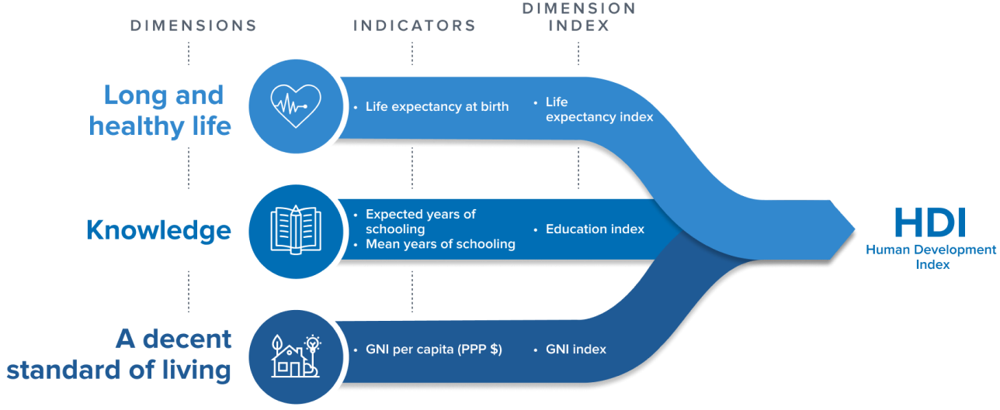

Pandas from Numpy#
By Matthew Brett and Peter Rush
This tutorial will show the fundamental structure of pandas Data Frames. We will look at the components that constitute a Data Frame - for instance, numpy arrays - in order to gain a deeper understanding of the raw ingredients that more advanced pandas methods and functions operate on.
What is Pandas?#
Pandas is an open-source python library for data manipulation and analysis.
Note
Why is Pandas called Pandas?
The “Pandas” name is short for “panel data”. The library was named after the type of econometrics panel data that it was designed to analyse. Panel data is longitudinal data where the same observational units (e.g. countries) are observed over multiple instances across time.
The pandas Data Frame is the most important feature of the pandas library. Data Frames, as the name suggests, contain not only the data for an analysis, but a toolkit of methods for cleaning, plotting and interacting with the data in flexible ways. For more information about pandas see this page.
Normally, we ask Pandas to create Data Frames by reading a data file (like a .csv file) Before we do that however, we will build our own Data Frame from scratch, beginning with the fundamental building block for Data Frames: Numpy arrays.
# import the libraries needed for this page
import numpy as np
import pandas as pd
Numpy arrays#
Let’s say we have some data that applies to a set of countries, and we have some countries in mind:
country_names_array = np.array(['Australia', 'Brazil', 'Canada',
'China', 'Germany', 'Spain',
'France', 'United Kingdom', 'India',
'Italy', 'Japan', 'South Korea',
'Mexico', 'Russia', 'United States'])
country_names_array
array(['Australia', 'Brazil', 'Canada', 'China', 'Germany', 'Spain',
'France', 'United Kingdom', 'India', 'Italy', 'Japan',
'South Korea', 'Mexico', 'Russia', 'United States'], dtype='<U14')
For compactness, we’ll also want to use the corresponding standard three-letter code for each country, like so:
country_codes_array = np.array(['AUS', 'BRA', 'CAN',
'CHN', 'DEU', 'ESP',
'FRA', 'GBR', 'IND',
'ITA', 'JPN', 'KOR',
'MEX', 'RUS', 'USA'])
country_codes_array
array(['AUS', 'BRA', 'CAN', 'CHN', 'DEU', 'ESP', 'FRA', 'GBR', 'IND',
'ITA', 'JPN', 'KOR', 'MEX', 'RUS', 'USA'], dtype='<U3')
For each of these countries, we have a Human Development Index (HDI) score. The HDI score for a country is a summary over multiple dimensions of human development: life expectancy, average years of schooling and Gross National Income per capita.

(Image from here.)
# Human Development Index Scores for each country
hdis_array = np.array([0.896, 0.668, 0.89 , 0.586,
0.844, 0.89 , 0.49 , 0.842,
0.883, 0.709, 0.733, 0.824,
0.828, 0.863, 0.894])
hdis_array
array([0.896, 0.668, 0.89 , 0.586, 0.844, 0.89 , 0.49 , 0.842, 0.883,
0.709, 0.733, 0.824, 0.828, 0.863, 0.894])
By the way, these data are real; they come from statistics compiled by the United Nations. For simplicity, we are looking just at data from the year 2000. Again, see the Our World in Data page for more detail.
Let’s say we also have the amount that fertility rate - that is, the total number of children born to an average woman - for each country. In due course, we’re interested to see whether HDI can predict the fertility rate values.
# fertility rate scores for each country
fert_rates_array = np.array([1.764, 2.247, 1.51 , 1.628,
1.876, 1.386, 3.35 , 1.249,
1.346, 2.714, 1.19 , 1.467,
1.21 , 1.641, 2.03 ])
fert_rates_array
array([1.764, 2.247, 1.51 , 1.628, 1.876, 1.386, 3.35 , 1.249, 1.346,
2.714, 1.19 , 1.467, 1.21 , 1.641, 2.03 ])
We probably will want to inspect this relationship graphically, which we can do easily using the Matplotlib library. Later, we will see that pandas offers us some streamlined ways of plotting data, without importing other libraries.
# some basic plotting with matplotlib
import matplotlib.pyplot as plt
# change to matplotlib
plt.scatter(hdis_array, fert_rates_array)
plt.xlabel('Human Development Index')
plt.ylabel('Fertility Rate');
Pandas Series (aka an array + an index)#
We want a good way to keep it clear which value corresponds to each country. We’re going to start with the HDI values.
One way of doing that is to make a new data structure, that contains the HDI values, but also has labels for each value. Pandas has an object for that, called a Series. You can construct a series by passing the values and the labels:
# make a series from the `hdis_array`
hdi_series = pd.Series(hdis_array,
index=country_codes_array)
hdi_series
AUS 0.896
BRA 0.668
CAN 0.890
CHN 0.586
DEU 0.844
ESP 0.890
FRA 0.490
GBR 0.842
IND 0.883
ITA 0.709
JPN 0.733
KOR 0.824
MEX 0.828
RUS 0.863
USA 0.894
dtype: float64
Notice the index= named argument. Pandas terms the collection of labels for
each value - the index. Think of the index as you would an index for a book
— it’s a way to get from — in our case — the country code, to the
corresponding value. We can get to the collection of labels with the .index
attribute of the Series.
# show the index of `hdi_series`
hdi_series.index
Index(['AUS', 'BRA', 'CAN', 'CHN', 'DEU', 'ESP', 'FRA', 'GBR', 'IND', 'ITA',
'JPN', 'KOR', 'MEX', 'RUS', 'USA'],
dtype='object')
Of course hdi_series also contains the HDI values, accessible with the .values attribute:
# show the values (data) in `hdi_series`
hdi_series.values
array([0.896, 0.668, 0.89 , 0.586, 0.844, 0.89 , 0.49 , 0.842, 0.883,
0.709, 0.733, 0.824, 0.828, 0.863, 0.894])
Think then of the Series as an object that associates an array of values (.values) with the corresponding labels for each value (.index).
We can access values from their corresponding label, by using the .loc accessor, an attribute of the Series object.
# using label based indexing to view a specific datapoint
hdi_series.loc['MEX']
np.float64(0.828)
.loc is an accessor that allows us to pass labels (that are present in the
.index), and returns the corresponding values. Here we ask for more than
one value, by passing in a list of labels:
# using label based indexing to view two specific datapoints
hdi_series.loc[['KOR', 'USA']]
KOR 0.824
USA 0.894
dtype: float64
Notice above, that passing one label to .loc returns the value, but passing two or more labels to .loc returns a subset of the Series. Put another way, one label gives a value, but more than one label gives a Series.
Indexing with .loc is called label-based indexing. You can also index by
position, as you would with a Numpy array. To remind ourselves of basic
indexing in Numpy, to get the thirteenth value in the Numpy array of HDI
values, one could run:
# using integer-based indexing to retrieve a specific datapoint
hdi_series[12]
/tmp/ipykernel_2365/3431190719.py:2: FutureWarning: Series.__getitem__ treating keys as positions is deprecated. In a future version, integer keys will always be treated as labels (consistent with DataFrame behavior). To access a value by position, use `ser.iloc[pos]`
hdi_series[12]
np.float64(0.828)
Numpy indexing with integers, like the above, is always indexing by position. We count from 0, so position 12 contains the thirteenth element.
You can do the same type of indexing with a Pandas series, with the .iloc accessor. Think of .iloc as integer indexing, or, if you like, locating with integers.
# using the `iloc` method of indexing
hdi_series.iloc[12]
np.float64(0.828)
# using the `iloc` method of indexing
hdi_series.iloc[[11, 14]]
KOR 0.824
USA 0.894
dtype: float64
Notice again that one integer to .iloc gives a value, but two or more
integers gives a Series.
You can already imagine that this kind of label-based indexing could be useful, because it is easier to avoid mistakes with:
hdi_series.loc['MEX']
np.float64(0.828)
— than it is to work out the position of Mexico in the array, and do:
hdis_array[11] # Was Mexico at position 11?
np.float64(0.824)
— oh, whoops, we mean:
hdis_array[12] # Ouch, no, it was a position 12.
np.float64(0.828)
As well as being harder to make mistakes, it makes the code easier to read, and therefore, easier to debug.
But the real value from this idea comes when you have more than one Series with corresponding labels.
For example, we can also make a Series with the fertility rate (fert_rate) data, like this:
# make a series of the fertility rates
fert_rate_series = pd.Series(fert_rates_array,
index=country_codes_array)
fert_rate_series
AUS 1.764
BRA 2.247
CAN 1.510
CHN 1.628
DEU 1.876
ESP 1.386
FRA 3.350
GBR 1.249
IND 1.346
ITA 2.714
JPN 1.190
KOR 1.467
MEX 1.210
RUS 1.641
USA 2.030
dtype: float64
But now imagine we want to look at the corresponding HDI and fert_rate values. we can so this separately, for each Series, like this:
# label-based indexing
fert_rate_series.loc['MEX']
np.float64(1.21)
# label-based indexing
hdi_series.loc['MEX']
np.float64(0.828)
Pandas Data Frames (a dictionary-like collection of series)#
Imagine though, that we’re going to be doing this for multiple countries, and that we have multiple (not just two) values per country. We would like a way of putting these Series together into a table, where the rows have labels (just as the Series values do), and the columns have names.
Each Series corresponds to one column in this table. Pandas calls these tables Data Frames.
# creating a dataframe from a dictionary
df = pd.DataFrame({'Human Development Index': hdi_series,
'Fertility Rate': fert_rate_series})
df
| Human Development Index | Fertility Rate | |
|---|---|---|
| AUS | 0.896 | 1.764 |
| BRA | 0.668 | 2.247 |
| CAN | 0.890 | 1.510 |
| CHN | 0.586 | 1.628 |
| DEU | 0.844 | 1.876 |
| ESP | 0.890 | 1.386 |
| FRA | 0.490 | 3.350 |
| GBR | 0.842 | 1.249 |
| IND | 0.883 | 1.346 |
| ITA | 0.709 | 2.714 |
| JPN | 0.733 | 1.190 |
| KOR | 0.824 | 1.467 |
| MEX | 0.828 | 1.210 |
| RUS | 0.863 | 1.641 |
| USA | 0.894 | 2.030 |
Think of this Data Frame as being like a dictionary of Series.
The keys in this dictionary are the column names we provided: hdi and fert_rate; the values are the corresponding Series.
We can get the hdi series by name, by indexing directly into the Data Frame,
like this:
# getting the `hdi` series by name
hdi_from_df = df['Human Development Index']
hdi_from_df
AUS 0.896
BRA 0.668
CAN 0.890
CHN 0.586
DEU 0.844
ESP 0.890
FRA 0.490
GBR 0.842
IND 0.883
ITA 0.709
JPN 0.733
KOR 0.824
MEX 0.828
RUS 0.863
USA 0.894
Name: Human Development Index, dtype: float64
Notice this returns a Series, extracted back from the Data Frame.
# show the type of `hdi_from_df`
type(hdi_from_df)
pandas.core.series.Series
Notice too, that the Series now has an extra attribute, which is the Name.
We said above that Series are the association between an array of .values, and a corresponding collection of labels, in .index. Now we see that the Series also has a .name, that we had not set in our original series:
# This is the `name` attribute of the Series we've extracted from the Data Frame.
hdi_from_df.name
'Human Development Index'
As you can see, we had not set the name of the Series we built above using pd.Series, so it gets the default .name of None.
# This was the original series we built with pd.Series.
hdi_series.name is None
True
We can also use .loc and .iloc accessors on the Data Frame, to get rows by label (index value) or by position:
# using `.loc` and the Series name
df.loc['MEX']
Human Development Index 0.828
Fertility Rate 1.210
Name: MEX, dtype: float64
Notice what Pandas did here. As for indexing into Series, indexing into the Data Frame with a single label returns the contents of the row. And Pandas, being a general thinker, sees that the contents of the row are values, that have labels, where the labels are the column names. Thus it returns the row to you as a new Series, where the Series has values from the row values, and labels from the column names.
Notice too that indexing with more than one value, returns a subset of the Data Frame. In strict parallel to indexing into a Series, indexing with multiple values into a Data Frame, returns a subset of the Data Frame, which is itself, a Data Frame.
# using `.loc` with index labels
df.loc[['KOR', 'USA']]
| Human Development Index | Fertility Rate | |
|---|---|---|
| KOR | 0.824 | 1.467 |
| USA | 0.894 | 2.030 |
What is a Series? What is a Data Frame?#
A Series is the association of:
An array of values (
.values)A sequence of labels for each value (
.index)A name (which can be
None).
A Data Frame is a dictionary-like collection of Series.
Adding additional data to our Data Frame#
The dataset we have used for our “handmade” Data Frame contains more than two columns. Let’s use the same “hand-building” process to add in additional data to our Data Frame, in order to then compare it to a non-“hand built” Data Frame, imported via the normal method.
First, we make another numpy array, containing the name of each country.
# making an array containing the name of each country
country_name_array = np.array(['Australia', 'Brazil', 'Canada', 'China', 'Germany', 'Spain',
'France', 'United Kingdom', 'India', 'Italy', 'Japan',
'South Korea', 'Mexico', 'Russia', 'United States'])
country_name_array
array(['Australia', 'Brazil', 'Canada', 'China', 'Germany', 'Spain',
'France', 'United Kingdom', 'India', 'Italy', 'Japan',
'South Korea', 'Mexico', 'Russia', 'United States'], dtype='<U14')
Now, we get the population of each country:
# making an array containing the population of each country (in the year 2000)
population_array = np.array([1.91324730e+07, 1.74018276e+08, 3.08918000e+07, 1.26958116e+09,
8.17972550e+07, 4.10197730e+07, 5.94837160e+07, 5.90573360e+07,
1.05792273e+09, 5.72722000e+07, 1.27027796e+08, 4.67666590e+07,
9.86255540e+07, 1.46717784e+08, 2.81484127e+08])
population_array
array([1.91324730e+07, 1.74018276e+08, 3.08918000e+07, 1.26958116e+09,
8.17972550e+07, 4.10197730e+07, 5.94837160e+07, 5.90573360e+07,
1.05792273e+09, 5.72722000e+07, 1.27027796e+08, 4.67666590e+07,
9.86255540e+07, 1.46717784e+08, 2.81484127e+08])
We can add a new column to the Data Frame by placing the name we want for the column inside square brackets, and assigning a numpy array to be the .values for that column:
# add the array to the DataFrame
df['Population'] = population_array
df
| Human Development Index | Fertility Rate | Population | |
|---|---|---|---|
| AUS | 0.896 | 1.764 | 1.913247e+07 |
| BRA | 0.668 | 2.247 | 1.740183e+08 |
| CAN | 0.890 | 1.510 | 3.089180e+07 |
| CHN | 0.586 | 1.628 | 1.269581e+09 |
| DEU | 0.844 | 1.876 | 8.179726e+07 |
| ESP | 0.890 | 1.386 | 4.101977e+07 |
| FRA | 0.490 | 3.350 | 5.948372e+07 |
| GBR | 0.842 | 1.249 | 5.905734e+07 |
| IND | 0.883 | 1.346 | 1.057923e+09 |
| ITA | 0.709 | 2.714 | 5.727220e+07 |
| JPN | 0.733 | 1.190 | 1.270278e+08 |
| KOR | 0.824 | 1.467 | 4.676666e+07 |
| MEX | 0.828 | 1.210 | 9.862555e+07 |
| RUS | 0.863 | 1.641 | 1.467178e+08 |
| USA | 0.894 | 2.030 | 2.814841e+08 |
Remember the maxim that “a Data Frame is just a dictionary-like collection of Series”?
Our new Population column is therefore nothing but a Series. We specified the name attribute in our assignment above. The command we used was df['Population'] = population:
# show the .name attribute
df['Population'].name
'Population'
We also specified the values:
# show the array containing the data
df['Population'].values
array([1.91324730e+07, 1.74018276e+08, 3.08918000e+07, 1.26958116e+09,
8.17972550e+07, 4.10197730e+07, 5.94837160e+07, 5.90573360e+07,
1.05792273e+09, 5.72722000e+07, 1.27027796e+08, 4.67666590e+07,
9.86255540e+07, 1.46717784e+08, 2.81484127e+08])
We can view both of these attributes, together with the index using the following syntax:
# show the full Series (note the index)
df['Population']
AUS 1.913247e+07
BRA 1.740183e+08
CAN 3.089180e+07
CHN 1.269581e+09
DEU 8.179726e+07
ESP 4.101977e+07
FRA 5.948372e+07
GBR 5.905734e+07
IND 1.057923e+09
ITA 5.727220e+07
JPN 1.270278e+08
KOR 4.676666e+07
MEX 9.862555e+07
RUS 1.467178e+08
USA 2.814841e+08
Name: Population, dtype: float64
The index here (of three-letter country codes) was inherited from the population array.
Each Data Frame column is a Series. In this case, we supplied a name and a numpy array for values. The pd.DataFrame() constructor automatically made these in to a Series.
We can use the pd.Series() constructor manually to build the same Series:
# we can also do this "manually"
population_series = pd.Series(population_array,
name='Population',
index=country_codes_array)
population_series
AUS 1.913247e+07
BRA 1.740183e+08
CAN 3.089180e+07
CHN 1.269581e+09
DEU 8.179726e+07
ESP 4.101977e+07
FRA 5.948372e+07
GBR 5.905734e+07
IND 1.057923e+09
ITA 5.727220e+07
JPN 1.270278e+08
KOR 4.676666e+07
MEX 9.862555e+07
RUS 1.467178e+08
USA 2.814841e+08
Name: Population, dtype: float64
Let’s use the same df['Name'] = array syntax to add a final column to our Data Frame, containing the full country names:
# adding in the country names
df['Country Name'] = country_names_array
Here is our full Data Frame - built “by hand” from raw ingredients - in it’s resplendent glory:
# view the full DataFrame
df
| Human Development Index | Fertility Rate | Population | Country Name | |
|---|---|---|---|---|
| AUS | 0.896 | 1.764 | 1.913247e+07 | Australia |
| BRA | 0.668 | 2.247 | 1.740183e+08 | Brazil |
| CAN | 0.890 | 1.510 | 3.089180e+07 | Canada |
| CHN | 0.586 | 1.628 | 1.269581e+09 | China |
| DEU | 0.844 | 1.876 | 8.179726e+07 | Germany |
| ESP | 0.890 | 1.386 | 4.101977e+07 | Spain |
| FRA | 0.490 | 3.350 | 5.948372e+07 | France |
| GBR | 0.842 | 1.249 | 5.905734e+07 | United Kingdom |
| IND | 0.883 | 1.346 | 1.057923e+09 | India |
| ITA | 0.709 | 2.714 | 5.727220e+07 | Italy |
| JPN | 0.733 | 1.190 | 1.270278e+08 | Japan |
| KOR | 0.824 | 1.467 | 4.676666e+07 | South Korea |
| MEX | 0.828 | 1.210 | 9.862555e+07 | Mexico |
| RUS | 0.863 | 1.641 | 1.467178e+08 | Russia |
| USA | 0.894 | 2.030 | 2.814841e+08 | United States |
Comparing our “handmade” Data Frame a Data Frame imported from a csv file#
Here we have built a Data Frame from scratch, to deepen our understanding of what a Data Frame is made from.
The cell below shows the normal method of importing data into a Data Frame. We use the pd.read_csv() function to read in the data from a .csv file:
# import data from a csv file
hdi_fert = pd.read_csv("data/year_2000_hdi_fert.csv")
hdi_fert
| Code | Human Development Index | Fertility Rate | Population | Country Name | |
|---|---|---|---|---|---|
| 0 | AUS | 0.896 | 1.764 | 1.913247e+07 | Australia |
| 1 | BRA | 0.668 | 2.247 | 1.740183e+08 | Brazil |
| 2 | CAN | 0.890 | 1.510 | 3.089180e+07 | Canada |
| 3 | CHN | 0.586 | 1.628 | 1.269581e+09 | China |
| 4 | DEU | 0.890 | 1.386 | 8.179726e+07 | Germany |
| 5 | ESP | 0.828 | 1.210 | 4.101977e+07 | Spain |
| 6 | FRA | 0.844 | 1.876 | 5.948372e+07 | France |
| 7 | GBR | 0.863 | 1.641 | 5.905734e+07 | United Kingdom |
| 8 | IND | 0.490 | 3.350 | 1.057923e+09 | India |
| 9 | ITA | 0.842 | 1.249 | 5.727220e+07 | Italy |
| 10 | JPN | 0.883 | 1.346 | 1.270278e+08 | Japan |
| 11 | KOR | 0.824 | 1.467 | 4.676666e+07 | South Korea |
| 12 | MEX | 0.709 | 2.714 | 9.862555e+07 | Mexico |
| 13 | RUS | 0.733 | 1.190 | 1.467178e+08 | Russia |
| 14 | USA | 0.894 | 2.030 | 2.814841e+08 | United States |
You’ll notice that currently, the index of the Data Frame we just imported is a sequence of numbers. This is the default Pandas index (e.g. it is the index Pandas will create if it is not told to do anything different). We’ll look more at this default index on the next page.
We can use the .set_index() method to set the three-letter country codes to be the index. We will look more at Pandas methods in later pages.
Here we just tell .set_index() what column name we want to use as the index - in this case we use the 'Code' column, containing the country codes:
# we can make them identical by setting the "Code" column as the index, in the imported data
hdi_fert = hdi_fert.set_index('Code')
hdi_fert
| Human Development Index | Fertility Rate | Population | Country Name | |
|---|---|---|---|---|
| Code | ||||
| AUS | 0.896 | 1.764 | 1.913247e+07 | Australia |
| BRA | 0.668 | 2.247 | 1.740183e+08 | Brazil |
| CAN | 0.890 | 1.510 | 3.089180e+07 | Canada |
| CHN | 0.586 | 1.628 | 1.269581e+09 | China |
| DEU | 0.890 | 1.386 | 8.179726e+07 | Germany |
| ESP | 0.828 | 1.210 | 4.101977e+07 | Spain |
| FRA | 0.844 | 1.876 | 5.948372e+07 | France |
| GBR | 0.863 | 1.641 | 5.905734e+07 | United Kingdom |
| IND | 0.490 | 3.350 | 1.057923e+09 | India |
| ITA | 0.842 | 1.249 | 5.727220e+07 | Italy |
| JPN | 0.883 | 1.346 | 1.270278e+08 | Japan |
| KOR | 0.824 | 1.467 | 4.676666e+07 | South Korea |
| MEX | 0.709 | 2.714 | 9.862555e+07 | Mexico |
| RUS | 0.733 | 1.190 | 1.467178e+08 | Russia |
| USA | 0.894 | 2.030 | 2.814841e+08 | United States |
Let’s compare this to our “hand-built” Data Frame:
# "handmade" DataFrame
df
| Human Development Index | Fertility Rate | Population | Country Name | |
|---|---|---|---|---|
| AUS | 0.896 | 1.764 | 1.913247e+07 | Australia |
| BRA | 0.668 | 2.247 | 1.740183e+08 | Brazil |
| CAN | 0.890 | 1.510 | 3.089180e+07 | Canada |
| CHN | 0.586 | 1.628 | 1.269581e+09 | China |
| DEU | 0.844 | 1.876 | 8.179726e+07 | Germany |
| ESP | 0.890 | 1.386 | 4.101977e+07 | Spain |
| FRA | 0.490 | 3.350 | 5.948372e+07 | France |
| GBR | 0.842 | 1.249 | 5.905734e+07 | United Kingdom |
| IND | 0.883 | 1.346 | 1.057923e+09 | India |
| ITA | 0.709 | 2.714 | 5.727220e+07 | Italy |
| JPN | 0.733 | 1.190 | 1.270278e+08 | Japan |
| KOR | 0.824 | 1.467 | 4.676666e+07 | South Korea |
| MEX | 0.828 | 1.210 | 9.862555e+07 | Mexico |
| RUS | 0.863 | 1.641 | 1.467178e+08 | Russia |
| USA | 0.894 | 2.030 | 2.814841e+08 | United States |
The hdi_fert Data Frame was automatically built by Pandas, when reading in a .csv file using pd.read_csv().
The df Data Frame was hand-built by use from numpy arrays and strings.
They both contain the same data, and are both dictionary-like collections of Series.
Each column in each Data Frame is a Series. Each Series has a name, and index and values.
Convenient Plotting with Data Frames#
Remember earlier we imported some extra libraries to plot some of our data?
Now we have a Data Frame, we can use the Data Frame’s in-built plotting machinery, to make the same graph. To do this, we just use the .plot() method, specify a Data Frame column to plot on the x axis, and a column to plot on the y axis. We use the kind= argument to tell Pandas what type of plot we want (in this case a scatter plot):
# plotting with pandas
df.plot(x='Human Development Index',
y='Fertility Rate',
kind='scatter');